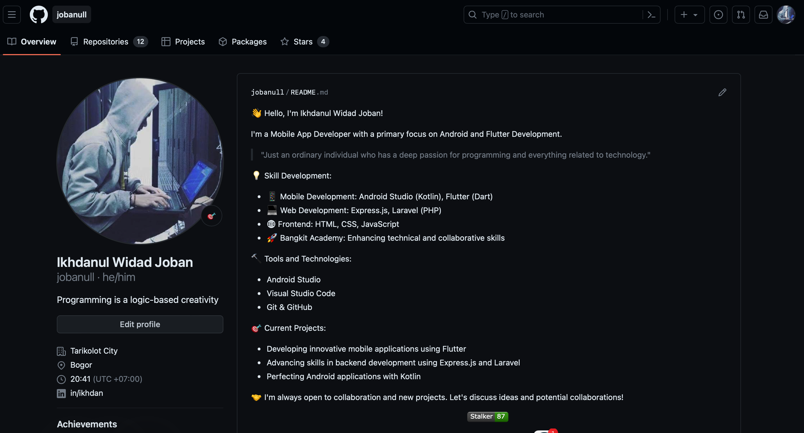

Access Control List
Access List (ACL) adalah daftar aturan yang digunakan pada perangkat jaringan untuk mengatur lalu lintas data yang melewati interface. ACL dapat memeriksa paket berdasarkan kriteria tertentu, seperti alamat IP, protokol, atau nomor port. Berdasarkan pemeriksaan tersebut, paket akan diizinkan (permit) atau ditolak (deny) sesuai kebijakan. ACL digunakan untuk meningkatkan keamanan, membatasi akses, dan mengoptimalkan lalu lintas jaringan.
Jenis-jenis ACL
- Standard ACL – Menyaring berdasarkan alamat IP sumber saja.
- Extended ACL – Menyaring berdasarkan IP sumber, IP tujuan, protokol, dan port.
- Named ACL – Menggunakan nama untuk pengelolaan aturan yang lebih fleksibel.
Manfaat ACL
- Meningkatkan keamanan jaringan dengan membatasi akses tidak sah.
- Mengurangi lalu lintas yang tidak diperlukan. a
- EBGP (External BGP) – Digunakan untuk pertukaran routing antar AS yang berbeda.
- IBGP (Internal BGP) – Digunakan untuk pertukaran routing antar router dalam AS yang sama.
- Berbasis protokol TCP (port 179) untuk koneksi yang andal.
- Mendukung kebijakan routing yang kompleks.
- Menggunakan path vector untuk memilih jalur terbaik.
- Dapat menghindari loop routing dengan informasi AS Path.
- Memungkinkan kontrol penuh terhadap rute keluar dan masuk.
- Mendukung multi-homing untuk redundansi koneksi internet.
- Dapat melakukan filter rute untuk keamanan dan efisiensi.
- Menentukan jalur berdasarkan kebijakan perusahaan/ISP.
- Mengontrol akses ke sumber daya tertentu.
- Membantu mengoptimalkan performa jaringan.
Border Gateway Protocol (BGP)
BGP (Border Gateway Protocol) adalah protokol routing eksternal (Exterior Gateway Protocol, EGP) yang digunakan untuk bertukar informasi routing antar Autonomous System (AS) di internet. BGP memungkinkan jaringan besar seperti ISP, data center, dan perusahaan untuk menentukan jalur terbaik berdasarkan kebijakan (policy-based routing), bukan hanya metrik teknis seperti jarak atau kecepatan.

Jenis-jenis BGP
Karakteristik BGP
Manfaat BGP
Contoh Konfigurasi BGP (Cisco Router)
Skenario: Router R1 (AS 65001) terhubung ke Router ISP (AS 65002)
R1(config)# router bgp 65001
R1(config-router)# neighbor 192.0.2.1 remote-as 65002
R1(config-router)# network 203.0.113.0 mask 255.255.255.0
R1
Skenario: block segment 2.0 dari 1.0
access-list 1 deny 192.168.2.0 0.0.0.255
access-list 1 permit any